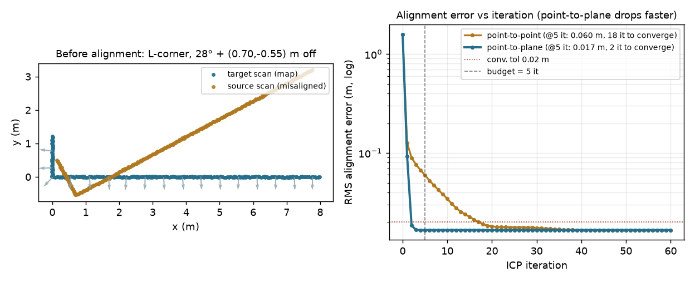

The registration step at the heart of LiDAR odometry and scan-matching SLAM — align two laser scans by alternating nearest-neighbour correspondence with a solve for the rigid transform. The error metric you pick decides how fast it converges.

Iterative Closest Point aligns a source scan to a target by looping three steps: match each source point to its nearest target point, solve for the rotation and translation that best fits those pairs, apply it, repeat. The choice of error is the whole game. Point-to-point minimizes the full squared distance between paired points (a closed-form Kabsch/SVD solve per iteration). Point-to-plane instead projects that error onto the target surface NORMAL — it only penalizes motion INTO the surface, letting the scan slide freely along flat walls, and solves a small linearized least-squares for the incremental pose each iteration.